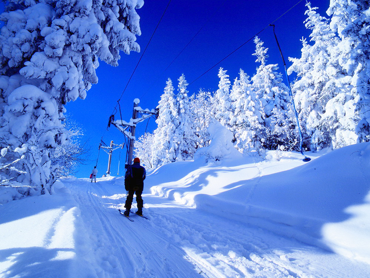
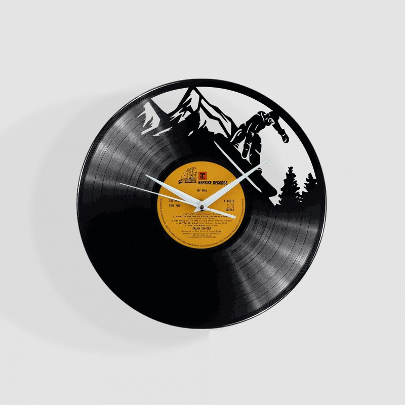
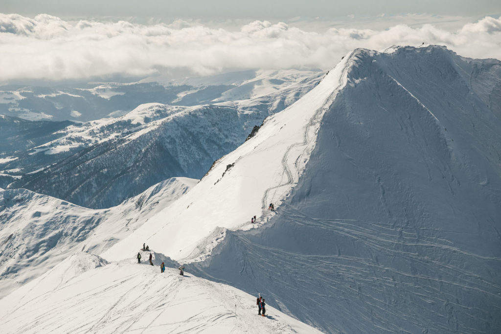

Slidinėjimas | Slidinėjimo kelionės | Slidinėjimo kurortai | HI MOUNTAINS
2020.10.30 03:16
Licencijuotas kelionių organizatorius +370 699 93519
Meniu
Slidinėjimo kryptys Gruzija Italija Prancūzija Šveicarija Verslui Nuoma Draudimas Lojalumas Blogas KontaktaiSoc. tinklai
Instagram FacebookGeriausios slidinėjimo kelionės ir kurortai
10 metų kelionių organizatoriaus patirtis. Geriausi Šveicarijos, Prancūzijos, Italijos, Andoros ir Gruzijos slidinėjimo kurortai. Bene žemiausios kainos rinkoje. Pinigų grąžinimo garantija šalyje įvedus karantiną.Kelionių pasiūlymai
Gudauri slidinėjimas Gruzija
Gudauri – didžiausias Sakartvelo (Gruzijos) slidinėjimo kurortas, įsikūręs Kazbegi regione. Gudauri kurorte keltuvai kelia į 3279 m. aukštį, yra 75 kilometrų gerai prižiūrimų trasų visų lygių slidinėjimui.
Apie kurortą
Trasų kilometražas – 75 km. Trasos pagal sudėtingumą – 37% mėlynos, 46% raudonos, 10% juodos Didžiausias aukštis – 3279 m. Keltuvų skaičius – 13 Sniego parkų skaičius – 1 Atstumas iki trasų – 500 m.Pinigų grąžinimo garantija šalyje įvedus karantiną.
Rinktis datas 590 € Įskaičiuota Skrydis lėktuvu Kelionės vadovo paslaugos! Maitinimas Rinktis datasLAAX slidinėjimas Šveicarija
Pristatome daugkartinį „World best ski resort“ nominantą ir nugalėtoją Šveicarijos LAAX kurortą. Vienas prabangiausių pasaulio kurortų gali pasigirti išskirtinai geromis sniego sąlygomis. .
Apie kurortą
Trasų kilometražas – 224 km. Trasos pagal sudėtingumą – 70 km. raudonos, 64 km. mėlynos, 46 km. juodos ir 44 km. oficialių freeride trasų Didžiausias aukštis – 3018 m. Keltuvų skaičius – 28 Sniego parkų skaičius – 4 Atstumas iki trasų – 5 min. pėsčiomis arba viešbučio ski bus (vyksta kas 10 min.)Pinigų grąžinimo garantija šalyje įvedus karantiną.
Rinktis datas 890 € Įskaičiuota Skrydis lėktuvu Įskaičiuotas ski-pass! Baseinas, pirtys! Rinktis datas4 slėniai slidinėjimas Šveicarija
Pristatome didžiausią Šveicarijos slidinėjimo kurortą 4 Vallees. Net 6 slidinėjimo stotis jungiantis kurortas su 410 km. trasų taip pat yra vienas iš septynių slidinėjimo kurortų pasaulyje, turintis aukščiausią, penkių žvaigždučių įvertinimą.
Apie kurortą
Trasų kilometražas – 410 km. Trasos pagal sudėtingumą – 107 km. mėlynų, 202 km. raudonų, 103 km. juodų trasų Didžiausias aukštis – 3330 m. Keltuvų skaičius – 92 Sniego parkų skaičius – 3 Atstumas iki trasų – 80 m.Pinigų grąžinimo garantija šalyje įvedus karantiną.
Rinktis datas 690 € Įskaičiuota Skrydis lėktuvu Įskaičiuotas ski-pass! Ski in-ski out! Rinktis datasVal Di Sole slidinėjimas Italija
Val Di Sole sl ėnis dolomitinėse alpėse itin pamėgtas dėl didelio saulėtų dienų skaičiaus, geros infrastruktūros ir, žinoma, pasakiškų dolomitinių alpių vaizdų.
Apie kurortą
Trasų kilometražas – 150 km. Trasos pagal sudėtingumą – 50 km. mėlynų, 67 km. raudonų ir 33 km. juodų trasų. Didžiausias aukštis – 3000 m. Keltuvų skaičius – 62 Sniego parkų skaičius – 1 Atstumas iki trasų – 800 m. Ski bus stotelė priešais viešbutįPinigų grąžinimo garantija šalyje įvedus karantiną.
Rinktis datas 790 € Įskaičiuota Skrydis lėktuvu Pusryčiai ir vakarienės! Baseinas, pirtys! Rinktis datasLes Deux Alpes slidinėjimas Prancūzija
Les Deux Alpes kurortas – vienas seniausių ir prestižiškiausių slidinėjimo kurortų Prancūzijoje. Trasų aukštis čia prasideda nuo 1650 m., o didžiausias trasų aukštis siekia net 3600 m., tad slidinėjama čia beveik ištisus metus.
Apie kurortą
Trasų kilometražas – 225 km. Trasos pagal sudėtingumą – 45 mėlynos, 17 žalios, 22 raudonų ir 12 juodų trasų Didžiausias aukštis – 3600 m. Keltuvų skaičius – 47 Sniego parkų skaičius – 1 Atstumas iki trasų – 100 m.Pinigų grąžinimo garantija šalyje įvedus karantiną.
Rinktis datas 690 € Įskaičiuota Skrydis lėktuvu Įskaičiuotas ski-pass! Rinktis datasVialattea slidinėjimas Italija
Tarptautinis Italijos slidinėjimo kurortas Vialattea susideda iš Sestriere, Sauze d’Oulx, Oulx, Sansicario, Cesana, Pragelato, Claviere.
Apie kurortą
Trasų kilometražas – 400 km. Trasos pagal sudėtingumą – 41 mėlyna, 92 raudonos ir 30 juodų trasų Didžiausias aukštis – 2800 m. Keltuvų skaičius – 69 Sniego parkų skaičius – 1 Atstumas iki trasų – 150 m.Pinigų grąžinimo garantija šalyje įvedus karantiną.
Rinktis datas 920 € Įskaičiuota Skrydis lėktuvu Įskaičiuotas ski-pass! Pusryčiai ir vakarienės! Rinktis datasLa Thuile slidinėjimas Italija
Viską, ko tikitės iš slidinėjimo Italijoje rasite Aostos slėnyje esančiame La Thuile slidinėjimo kurorte. Tai saulėtos slidinėjimo dienos, gražiausi matyti vaizdai su skanaus espresso puodeliu pertraukos metu.
Apie kurortą
Trasų kilometražas – 147 km. Trasos pagal sudėtingumą – 60 km. mėlynos, 73 km. - raudonos ir 14 km. juodų trasų Didžiausias aukštis – 2579 m. Keltuvų skaičius – 35 Sniego parkų skaičius – 1 Atstumas iki trasų – 40 - 80 m.Pinigų grąžinimo garantija šalyje įvedus karantiną.
Rinktis datas 600 € Įskaičiuota Skrydis lėktuvu Kelionės vadovo paslaugos! Baseinas Rinktis datasSvanetija slidinėjimas Sakartvelas
Išbandėme, rašome stiprų dešimtuką ir į Svanetiją grįžtame vėl! Freeride ir backcountry mėgėjus sveikiname. Jūs atsidūrėte vienoje tinkamiausių vietų pasaulyje. Svanetijos regionas užima labai kalnuotas sritis Kaukazo kalnų grandinėje. Tai – aukščiausia gyvenama žmonių teritorija Europoje. Slidinėti Svanetija kviečia tuos, kurie mėgsta šviežią ir purų sniegą, turėsite laisvę rinktis šlaitų statumą ir maršruto sudėtingumą.
Apie kurortą
Trasų kilometražas – 19km Trasos pagal sudėtingumą – Kelionė pažengusiems Didžiausias aukštis – 3036 m. Keltuvų skaičius – 5 Sniego parkų skaičius – - Atstumas iki trasų – 20-60 min.Pinigų grąžinimo garantija šalyje įvedus karantiną.
Rinktis datas 570 € Įskaičiuota Skrydis lėktuvu Pusryčiai ir vakarienės! Kelionės vadovo paslaugos! Rinktis datasSerre Chevalier slidinėjimas Prancūzija
Serre Chevalier įstrigs atmintyje kaip vienas geriausių ir didžiausių Europos slidinėjimo centrų. Slidinėjimas 250 kilometrų trasų turinčiame Serre Chevalier yra tarsi kelionė: nuo neįprastai aukštai čia augančių medžių vainikų leisdamiesi žemyn jausitės, lyg čiuožtumėte per skirtingas šalis ir kraštovaizdžius.
Apie kurortą
Trasų kilometražas – 250 km. Trasos pagal sudėtingumą – 138 km. mėlynų, 80 km. raudonų, 32,5 km. juodų trasų Didžiausias aukštis – 2850 m. Keltuvų skaičius – 57 Sniego parkų skaičius – 3 Atstumas iki trasų – 100-300 m.Pinigų grąžinimo garantija šalyje įvedus karantiną.
Rinktis datas 750 € Įskaičiuota Skrydis lėktuvu Įskaičiuotas ski-pass! Rinktis datasValmeinier slidinėjimas Prancūzija
Savoie regione esantis Valmeinier kurortas turi 150 kilometrų trasų. Mūsų produkto vadovo Lauryno teigimu, kurortas itin tinkantis pradedantiems bei vidutinio lygio slidininkams.
Apie kurortą
Trasų kilometražas – 150km Trasos pagal sudėtingumą – 23% žalių, 29% mėlynų, 37% raudonų, 11% juodų Didžiausias aukštis – 2750m Keltuvų skaičius – 16 Sniego parkų skaičius – 1 Atstumas iki trasų – 50mPinigų grąžinimo garantija šalyje įvedus karantiną.
Rinktis datas 280 € Įskaičiuota Tik apgyvendinimas 6dienų ski pasai! Jakuzzi, sauna! Rinktis datasUžsisakyk naujienlaiškį
Turite klausimų?
+370 699 93519 info@himountains.lt Kauno g. 5, VilniusMeniu
Blogas Nuolaidos klientams Draudimas Lojalumas KontaktaiKelionės
Andoroje Gruzijoje Italijoje Prancūzijoje Šveicarijoje UkrainojeMes naudojame slapukus, kad suprastume kaip Jūs naudojate svetainę ir galėtume ją tobulinti. Slapukai taip pat padeda personalizuoti svetainės turinį ir reklamą. Paspaudę „sutinku“ arba toliau tęsdami naršymą svetainėje Jūs sutinkate su slapukų įdiegimu ir naudojimu. Savo sutikimą galėsite atšaukti bet kuriuo metu, pakeisdami savo interneto naršyklės nustatymus ir ištrindami įrašytus slapukus.
Sutinku- slidinėjimas | Mindaugo blogas
- Slidinėjimas - Blogger
- Slidinėjimo akademija
- Lygumų slidinėjimas (XC)
- Lėktuvu Archives - Slidinėjimas
- kalnumagija - Kalnų slidinėjimo blogas
- Lietuvos nacionalinė slidinėjimo asociacija
- Slidinėjimo kelionės
- slidinėjimas
- Slidinėjimas | Slidinėjimo kelionės | Slidinėjimo kurortai ...
- slidinėjimas | Mindaugo blogas
Iš pradžių tai buvo tik idėja tapti juridiniu vienetu, kad būtų galima oficialiai prašyti paramos, nes kalnų slidinėjimas lietuviams –… Į Pjongčangą – perrašyti istorijos 17. lapkričio 2017
- Slidinėjimas - Blogger
Slidinėjimas. Tik geriausi pasiūlymai slidinėjimo kelionėms į Austriją, Italiją, Slovakiją, Prancūziją ir kt. šalis vykstant autobusu, lėktuvu, savo ...
- Slidinėjimo akademija
Slidinėjimo kelionės - apsilankykite ir išsirinkite šalį, kelionės datą, bei pasinerkite į nepaprastą nuotykį. Visi išvykimai garantuoti!
- Lygumų slidinėjimas (XC)
Slidinėjimas yra originalus ir atsižvelgiant į dalyvių skaičių, viena iš skaitilngiausių šiaurinių („nordic“) sporto šakų, kurios vadinamos šiaurinėmis dėl kilmės geografine prasme, kadangi išsivystė šiaurinėje Europos dalyje, priešingai nei kalnų „alpine skiing “slidinėjimas, kurio kilmė siejama su Alpėmis.
- Lėktuvu Archives - Slidinėjimas
Slidinėjimo Akademijoje apsilankė ypatingas svečias - Lietuvos Respublikos Prezidentė. Ji ne tik domėjosi, kaip mums sekasi, stebėjo slidinėjančius klientus, bet ir susidomėjusi klausėsi apie vienintelę tokią sporto ir laisvalaikio erdvę ne tik Lietuvoje, bet ir visose Baltijos šalyse, kasdien sutraukiančią šimtus žiemos sporto gerbėjų.
- kalnumagija - Kalnų slidinėjimo blogas
Slidinėjimas 250 kilometrų trasų turinčiame Serre Chevalier yra tarsi kelionė: nuo neįprastai aukštai čia augančių medžių vainikų leisdamiesi žemyn jausitės, lyg čiuožtumėte per skirtingas šalis ir kraštovaizdžius.
- Lietuvos nacionalinė slidinėjimo asociacija
Slidinėjimas ir čiuožimas snieglente yra nesuvaržytos sporto šakos, kur kiekvienas gali judėti kur ir kaip tik nori, su sąlyga, kad jie laikysis taisyklių ir čiuoš atsižvelgdami į savo asmeninius gebėjimus ir kalnuose vyraujančią padėtį. Slidininkas ar snieglenintininkas priešakyje turi pirmumo teisę.
- Slidinėjimo kelionės
slidinėjimas Lyguminių slidžių video žiemai/vasarai. June 6, 2014 June 6, 2014 karalius Laisvalaikis/Hobbies laisvalaikis, slidinėjimas, vasara, žiema. Labai paprastas, bet tuo pačiu daug parodantis apie techniką ir slidinėjimo būdus žiemą vasarą su lyguminėmis slidėmis. Vilniuje jau taip pat atsiranda vienas kitas “vasarinis ...
- slidinėjimas
slidinėjimas statusas T sritis Kūno kultūra ir sportas apibrėžtis Kai kurių žiemos sporto šakų (biatlono, slidinėjimo dvikovės) varžybų sudedamoji dalis.atitikmenys: angl. skiing vok. Skisport, m rus. лыжный спортrus. лыжный спорт
- Slidinėjimas | Slidinėjimo kelionės | Slidinėjimo kurortai ...
Slidinėjimas Ötztal Pagrindiniai slidinėjimo kurortai : Obergurgl-Hochgurgl trasų 112 km, mėlynų 60 km, raudonų 33 km, juodų 14 km, aukščiai 1800 - 3030 m virš jūros lygio. Sölden trasų 146 km, mė...
Iš pradžių tai buvo tik idėja tapti juridiniu vienetu, kad būtų galima oficialiai prašyti paramos, nes kalnų slidinėjimas lietuviams –… Į Pjongčangą – perrašyti istorijos 17. lapkričio 2017
Slidinėjimas. Tik geriausi pasiūlymai slidinėjimo kelionėms į Austriją, Italiją, Slovakiją, Prancūziją ir kt. šalis vykstant autobusu, lėktuvu, savo ...
Slidinėjimo kelionės - apsilankykite ir išsirinkite šalį, kelionės datą, bei pasinerkite į nepaprastą nuotykį. Visi išvykimai garantuoti!
Slidinėjimas yra originalus ir atsižvelgiant į dalyvių skaičių, viena iš skaitilngiausių šiaurinių („nordic“) sporto šakų, kurios vadinamos šiaurinėmis dėl kilmės geografine prasme, kadangi išsivystė šiaurinėje Europos dalyje, priešingai nei kalnų „alpine skiing “slidinėjimas, kurio kilmė siejama su Alpėmis.
Slidinėjimo Akademijoje apsilankė ypatingas svečias - Lietuvos Respublikos Prezidentė. Ji ne tik domėjosi, kaip mums sekasi, stebėjo slidinėjančius klientus, bet ir susidomėjusi klausėsi apie vienintelę tokią sporto ir laisvalaikio erdvę ne tik Lietuvoje, bet ir visose Baltijos šalyse, kasdien sutraukiančią šimtus žiemos sporto gerbėjų.
Slidinėjimas 250 kilometrų trasų turinčiame Serre Chevalier yra tarsi kelionė: nuo neįprastai aukštai čia augančių medžių vainikų leisdamiesi žemyn jausitės, lyg čiuožtumėte per skirtingas šalis ir kraštovaizdžius.
Slidinėjimas ir čiuožimas snieglente yra nesuvaržytos sporto šakos, kur kiekvienas gali judėti kur ir kaip tik nori, su sąlyga, kad jie laikysis taisyklių ir čiuoš atsižvelgdami į savo asmeninius gebėjimus ir kalnuose vyraujančią padėtį. Slidininkas ar snieglenintininkas priešakyje turi pirmumo teisę.
slidinėjimas Lyguminių slidžių video žiemai/vasarai. June 6, 2014 June 6, 2014 karalius Laisvalaikis/Hobbies laisvalaikis, slidinėjimas, vasara, žiema. Labai paprastas, bet tuo pačiu daug parodantis apie techniką ir slidinėjimo būdus žiemą vasarą su lyguminėmis slidėmis. Vilniuje jau taip pat atsiranda vienas kitas “vasarinis ...
slidinėjimas statusas T sritis Kūno kultūra ir sportas apibrėžtis Kai kurių žiemos sporto šakų (biatlono, slidinėjimo dvikovės) varžybų sudedamoji dalis.atitikmenys: angl. skiing vok. Skisport, m rus. лыжный спортrus. лыжный спорт
Slidinėjimas Ötztal Pagrindiniai slidinėjimo kurortai : Obergurgl-Hochgurgl trasų 112 km, mėlynų 60 km, raudonų 33 km, juodų 14 km, aukščiai 1800 - 3030 m virš jūros lygio. Sölden trasų 146 km, mė...
  